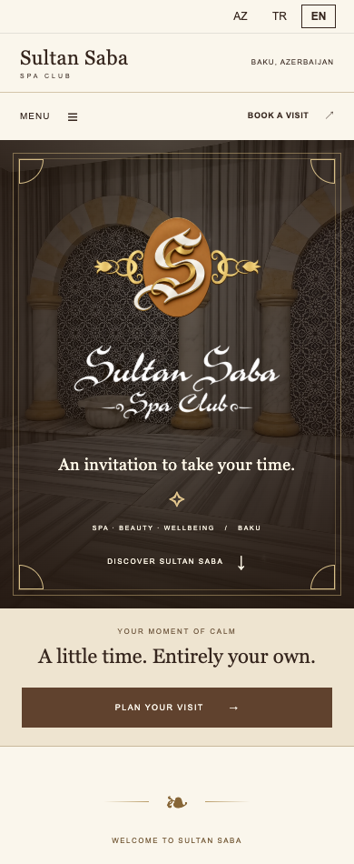
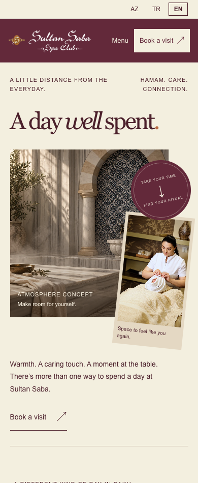
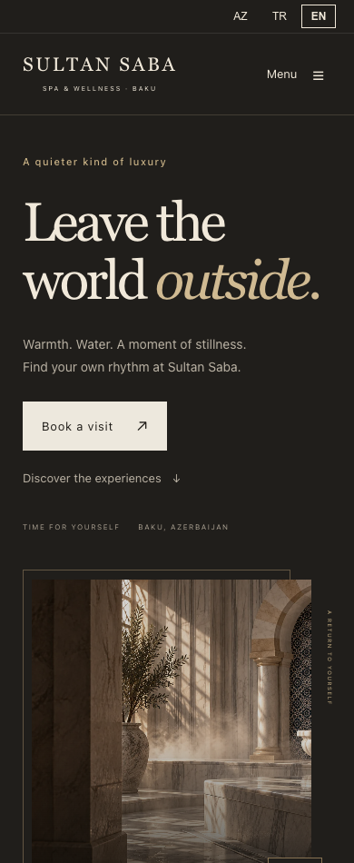

← Three design optionsSULTAN SABA · WEBSITE DESIGN STUDY · EBSO
A place to begin
the conversation.
These three concepts explore how Sultan Saba could present its spaces and services online. Each offers the same core experiences and an illustrative booking journey, through a different visual identity.
OPTION 01 / SULTAN SABA CLASSICA familiar signature.
A formal, symmetrical spa website built around the retained emblem and calligraphic wordmark. Walnut, champagne and ivory, ornamental framing and direct navigation give the brand a traditional presence.
References: Hürrem Sultan Hamamı and Çırağan Palace Spa — classic hospitality presentation and clear service discovery.


Open Sultan Saba Classic →
OPTION 02 / A DAY AT SULTAN SABAExpressive. Personal. Memorable.
A bolder editorial composition, oversized typography and an asymmetrical photo arrangement. The narrative follows a possible day: time in the hamam, personal care, then a pause at the café.
Primary reference: Othership, for distinctive experience storytelling. Sultan Saba’s own services and photographs define the result.


Open A Day at Sultan Saba →
OPTION 03 / THE RITUALWarm. Intimate. Timeless.
Warm darkness, ivory type and framed photography create a slower, more personal atmosphere. The marble hamam leads the story; the page then alternates between individual experiences and the spaces around them.
Primary reference: AIRE Ancient Baths — ritual storytelling, place and an unmistakable booking invitation. This is an original Sultan Saba interpretation.


Open The Ritual →
Refined around your feedback.
These website design options are starting points. Photography, wording, colours, typography, layouts and the booking journey can be developed around your preferences and business needs.
Open each design, explore the services and try the illustrative booking flow. No real appointment or payment is created.